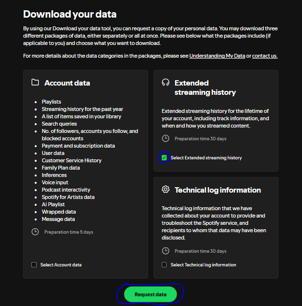

Instructions
How to get your Spotify Streaming History ZIP
Use Spotify's official privacy tools to request the data export this analyzer expects.
The only package needed for this site is Extended Streaming History.
Steps
- Open Spotify's account privacy page using the button above and sign in to your Spotify account if prompted.
- Find the option to download your data and request Extended Streaming History.
- Submit the request and wait for Spotify to prepare the export. This should take a few days.
- When the download is ready, save the ZIP file to your device without unpacking it.
- Return to the analyzer landing page and upload that ZIP directly here.
Spotify also explains the available privacy/data options here: Data rights and privacy choices.
Reference Image
